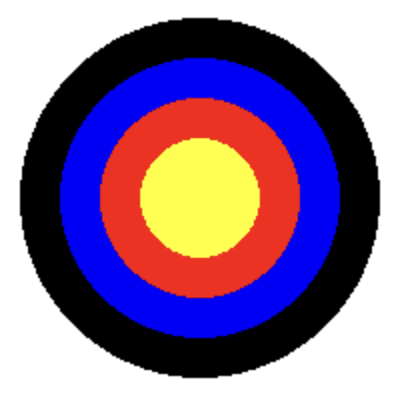
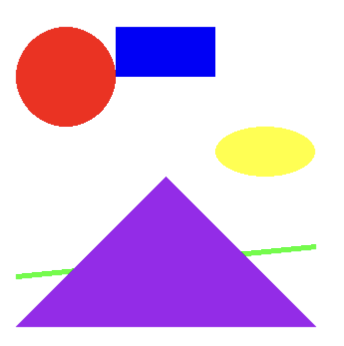

Printing and drawing#
In this lesson you will write code to print things on the screen and draw pretty pictures. This will give you the basics of Python:
running Python commands, called functions;
writing your own functions;
using functions from libraries someone else wrote.
Let’s get started. A computer program is made up of instructions that a computer follows. Here is a simple program with two lines:
# A short program to print a few values
print(42)
print("Hello")
Show code cell output
42
Hello
This program causes the computer to print the number 42 in the console window, and then to print the word “Hello”. Click on “show code cell output” below the code to see the output.
The lines of code are run, or executed, in the order they appear.
The first line, # A short program to print a few values, is called a comment. Python ignores comments; they are just for us humans. Any line of code starting with the hashtag # is a comment.
The word print is a Python command, called a function call. All function calls look the same: the name of the function followed by parentheses, like print().
Parameters#
Sometimes there will be values inside the parentheses, like 42 or "Hello". This data gives the function call additional information it needs to do its work. We call the data inside the parentheses the parameters to the function call. So print(42) has one parameter, 42.
Each parameter has a type. The parameter 42 is an integer, or whole number. We can do things like multiply integers, although we won’t do it yet.
The parameter "Hello" is a string, or sequence of letters and numbers. Notice that the quotes around "Hello" aren’t printed. They just tell Python that "Hello" is a string. We can’t multiply strings, but we might be able to do other things with them.
Excercise: Inigo Montoya#
Learning objective: Run and edit Python code.
Copy the next program into your Python editor. PyCharm and Visual Studio Code (vscode) are popular choices. Run the code in the editor to see the output.
# A program to output a short greeting
print("Hello")
print("my")
print("name")
print("is")
print("Inigo")
print("Montoya")
Show code cell output
Hello
my
name
is
Inigo
Montoya
Now change the program to print out your name instead of Inigo Montoya’s. Run it again to test it.
Writing your own functions#
We can write our own commands in Python. A function in Python is like a little named program within your program. Here’s an example that defines two different functions: say_hello and why_goodbye.
def say_hello():
print("I say")
print("hello.")
def why_goodbye():
print("I don't know why you say goodbye.")
Check the output of the program above. You will see that there isn’t any. The code defined two functions, but it didn’t actually run the functions.
Function definitions have two parts: a header, and a body. The header gives the name of the function you want to define (as well as some other things we’ll see later). The body is a set of lines of code that tell what the function does. Each line of the body must be indented by pressing the tab key. The indentations tell Python where the function body begins and ends.
The header uses the keyword def (short for define), the name of the function you’d like to define, parentheses after the name of the function, and a colon. So the header for the first function is:
def say_hello():
The body of the first function is
print("I say")
print("hello.")
Exercise: I don’t know why you say goodbye#
Learning objective: Call functions that have been defined.
Copy the code for the function definitions for say_hello and why_goodbye into a new Python file in your editor. Add function calls to those function after the definitions so that program prints the following when run. (The answer is hidden under “show code cell source”; no peeking until you’ve tried it yourself.)
Show code cell source
def say_hello():
print("I say")
print("hello.")
def why_goodbye():
print("I don't know why you say goodbye.")
say_hello()
why_goodbye()
say_hello()
I say
hello.
I don't know why you say goodbye.
I say
hello.
Drawing with Pygame#
Here is a little piece of code to draw two circles. The code won’t work by itself yet, since Python doesn’t have a built-in function to draw circles:
circle(Color('blue'), 125, 100, 50)
circle(Color('green'), 275, 100, 50)
There are two function calls to the function named circle. The first one, circle(Color('blue'), 125, 100, 50) draws a blue circle centered at a location 125 pixels across from the left of the window, and 100 pixels down from the top of the window. The circle has a radius of 50 pixels.
The circle function must have four parameters. How do I know? I wrote the circle function myself, and we’ll see it in the next section. The first parameter, Color('blue') is a little bit magical; we’ll look at it later. The next three paramters, 125, 100, and 50 are integers, or whole numbers.
Complete code for drawing circles#
Let’s make the circle drawing code actually work. You won’t understand all of the longer code below. That’s ok. For now it is enough to know that the pygame library has functions to do things like open up a window on the screen and draw a circle in it, and this code sets pygame up to do that. Do look at the contents of the function draw, where the real work happens.
import pygame
from pygame import Color
def init():
# Initialize Pygame
pygame.init()
# Set dimensions and create a screen
width, height = 400, 200
screen = pygame.display.set_mode((width, height))
return screen
def game_loop():
# Set the background color
background_color = (255, 255, 255) # white
# Main loop
running = True
while running:
for event in pygame.event.get():
if event.type == pygame.QUIT:
running = False
# Fill the background
gamescreen.fill(background_color)
# Draw circles
draw()
# Update the display
pygame.display.flip()
# Quit Pygame
pygame.quit()
def circle(color, x, y, radius):
pygame.draw.circle(gamescreen, color, (x, y), radius)
gamescreen = init()
def draw():
# you can put all your drawing code here
circle(Color('blue'), 125, 100, 50)
circle(Color('green'), 275, 100, 50)
if __name__ == "__main__":
game_loop()
Exercise: bullseye#
{kind=link}
Learning objective. Use circle() function calls to make a drawing.
Copy the complete code for drawing two circles above into a new Python file. Edit the body of the draw function to draw an archery bullseye like the one on the right.
Hint: My solution drew four circles centered at the center of the 400x400 pixel screen: one yellow, one red, one blue, and one black. Each circle had a different radius. The order that the circles is drawn matters, since circles drawn later cover up circles drawn first.
Project: book cover#
{kind=link}
Learning objective. Use a variety of drawing commands to draw an interesting picture.
Childrens board books often have colorful, simple covers. See the covers for Goodnight Moon and The Very Hungry Caterpillar.
{kind=link}
{kind=link}
You can use simplegraphics.py as a starting point. Download it, and copy it into the directory where you are editing your Python files, or just copy-paste the code into a new Python file in your editor. The picture on the right shows some example shapes that simplegraphics.py can draw.
Write a Python program that uses function calls to circle, rectangle, triangle, and ellipse to draw a picture. You can create your own artwork from scratch, or use one of the book covers for inspiration.
Some other ideas might be:
Light rays passing through a prism
A snowman in a cozy scene with evergreen trees
A child holding a bunch of balloons